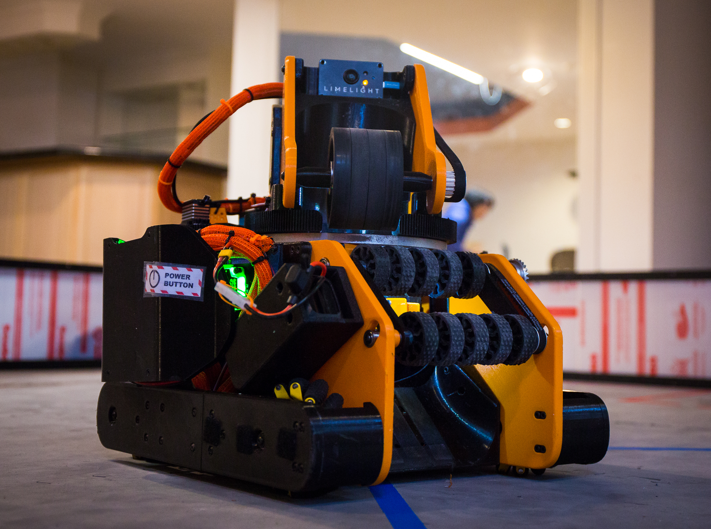
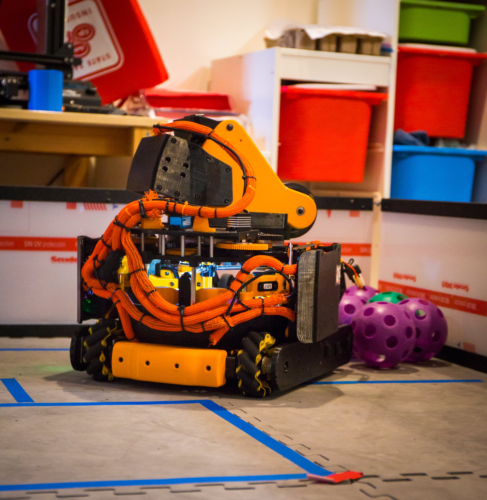
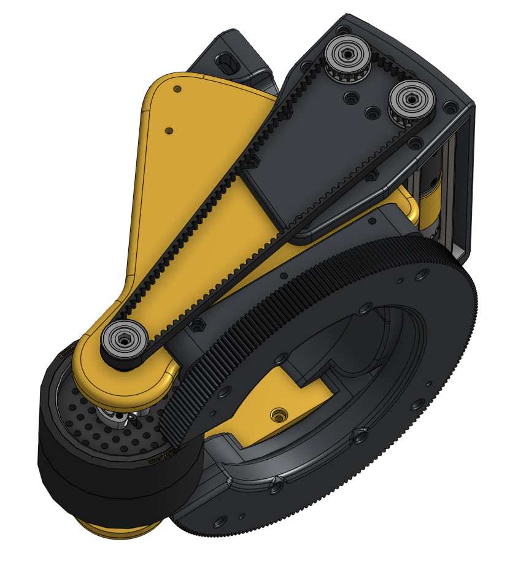
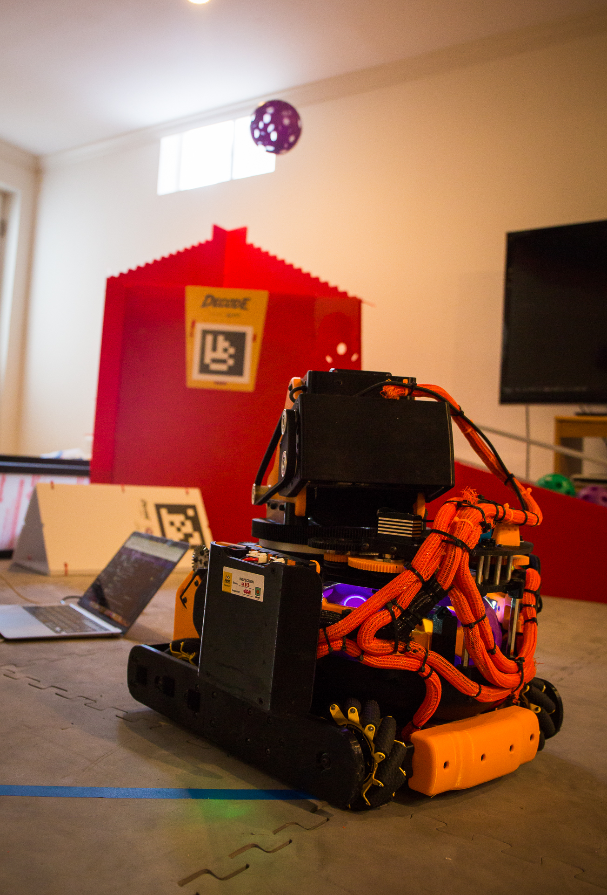
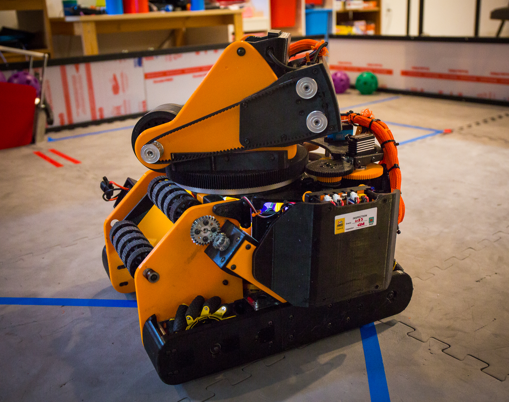
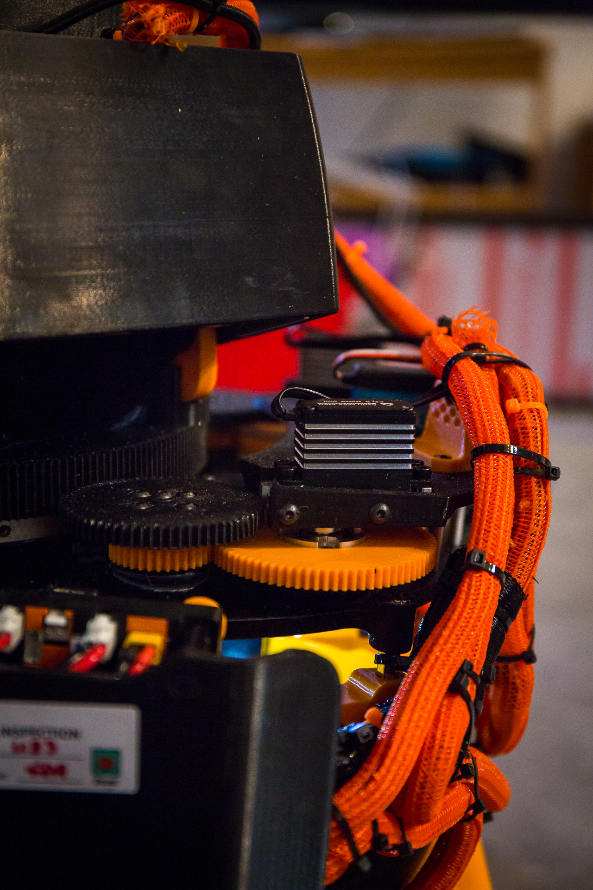

Mecanum drivetrain
Four mecanum wheels provide forward motion, strafing, and rotation. Seven goBILDA Yellow Jacket 312 RPM motors power the drivetrain, selected to balance speed, torque, and the available space.
FTC Decode / Competition robot
This robot was built around a simple goal: make a compact, serviceable machine that could be adjusted quickly. I leaned on 3D-printed parts and a tight subsystem layout so changes were easy to make during testing.

01 / Robot systems
The chassis, launcher, turret, transfer, and wiring all had to fit together. We designed them as one system and then adjusted parts as testing showed what needed to change.

Four mecanum wheels provide forward motion, strafing, and rotation. Seven goBILDA Yellow Jacket 312 RPM motors power the drivetrain, selected to balance speed, torque, and the available space.
Two 6000 RPM motors drive a dual-flywheel launcher. At about 5 mm of compression, it could reach roughly 30 ft. A two-servo turret turns about 180° so the launcher can aim without turning the whole robot.
A three-stage printed transfer extends more than 10 cm from an 8 cm retracted footprint. The basket mechanism uses a 3:1 servo reduction, giving it about 810° of rotation through the mechanism.
Two-wheel odometry, motor encoders, and Limelight vision provide position and targeting information. Together, they give the robot more to work with than timed motor commands alone.
02 / Build timeline
These are the main stages of the build. Dates can be added as we fill in the season timeline.
Date TBD
01Fit the drivetrain and scoring systems into a 439 × 425 × 440 mm robot, leaving room for structure, wiring, and service access.
PackagingDate TBD
02Design more than 150 custom parts. 3D printing over 70% of them made it practical to revise mounts, guides, and mechanism interfaces as we tested.
CAD + fabricationDate TBD
03Integrate the mecanum drive, flywheel launcher, turret, transfer, basket, odometry, and Limelight into one serviceable robot.
IntegrationDate TBD
04Test mechanisms under match conditions, make changes between events, and keep iterating after the robot first worked.
Competition03 / Design choices
We printed custom mounts, guides, brackets, and mechanism parts so we could move from CAD to a testable revision quickly. Load-bearing and wear surfaces still needed to be easy to replace.
The drivetrain needed a useful balance of speed and torque; the launcher needed flywheel speed. Using different motors for those jobs made more sense than standardizing on one motor everywhere.
The turret lets the launcher turn independently of the chassis. That adds mechanical and control complexity, but means the robot can keep moving while it adjusts its shot.
04 / Testing + iteration
We kept refining the robot through competition. It finished in roughly the top half of regional competition, with plenty left to learn from each subsystem.
Test straight-line speed, strafing, rotation, acceleration, and motor synchronization. Wheel alignment, symmetry, weight distribution, and interference all affect how a mecanum robot moves.
Track flywheel speed, compression, ball position, launch angle, battery voltage, and motor temperature. The goal is a predictable shot, not just a maximum-range one.
Check turret range, accuracy, backlash, and response, then watch the transfer for friction, jams, and unreliable extension. Small geometry changes can make a big difference in a tightly packed robot.
05 / Robot details





